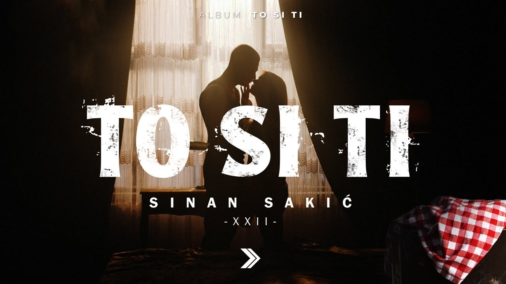
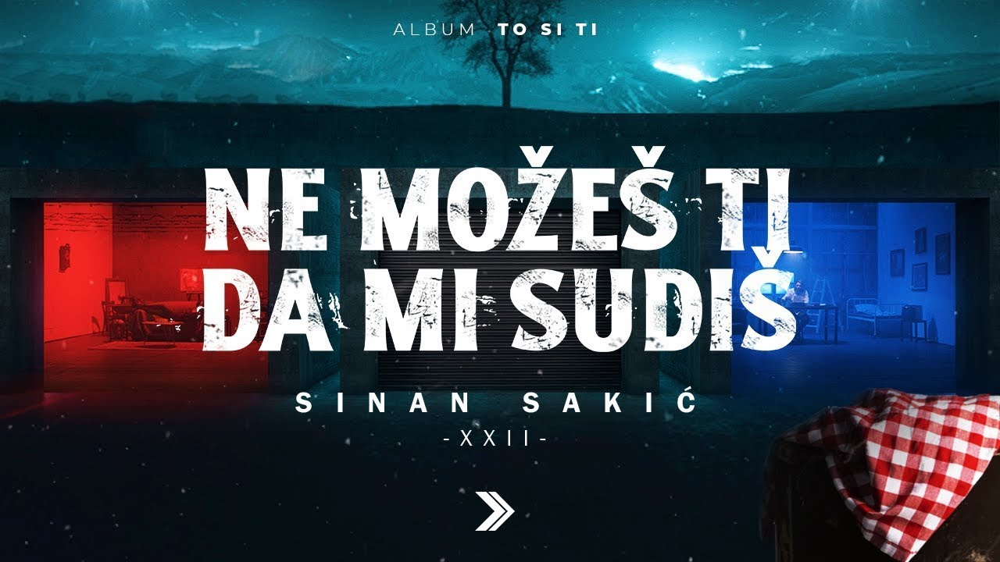
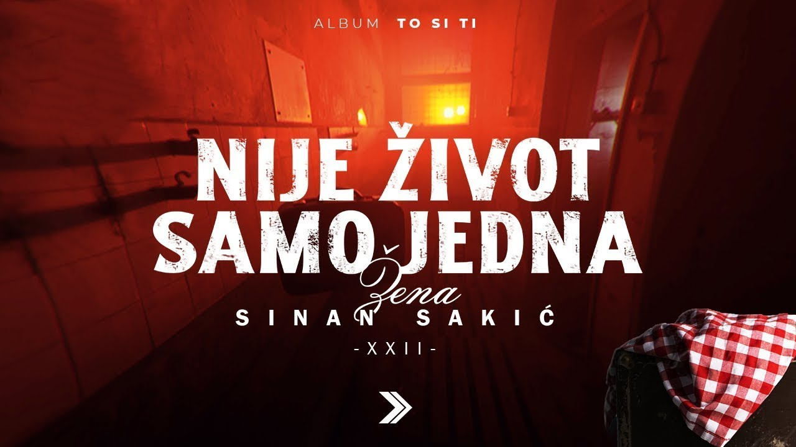
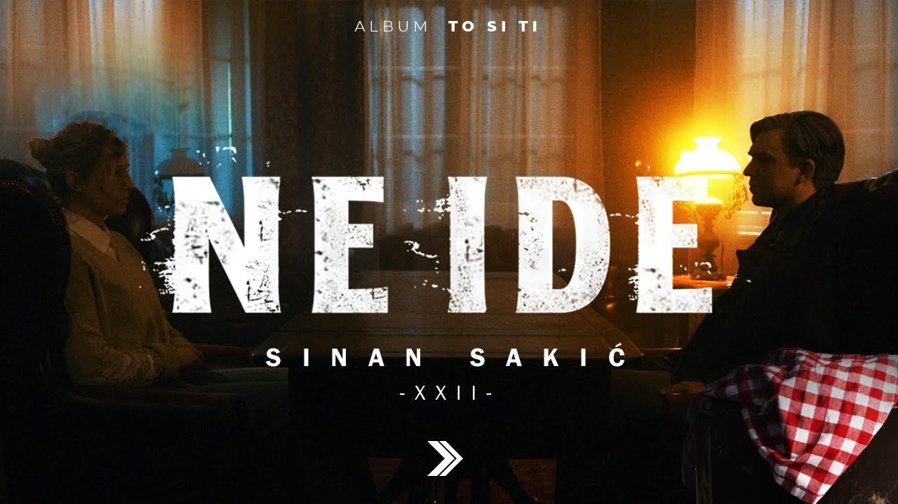

PhotographyFotografija
Sinan Sakić — Music Cover ArtworkSinan Sakić — Dizajn muzičkog covera
This project brings together a collection of visual artworks created for songs by Sinan Sakić. Each cover presents a distinct visual identity while capturing the mood and character of the music. The goal was to create memorable imagery that complements the songs and gives each release its own visual presence. Ovaj projekat objedinjuje kolekciju vizuelnih radova za pjesme Sinana Sakića. Svaki omot ima svoj vizuelni identitet i prenosi atmosferu i karakter muzike. Cilj je bio stvoriti upečatljive vizuale koji dopunjuju pjesme i svakom izdanju daju prepoznatljiv izgled.



